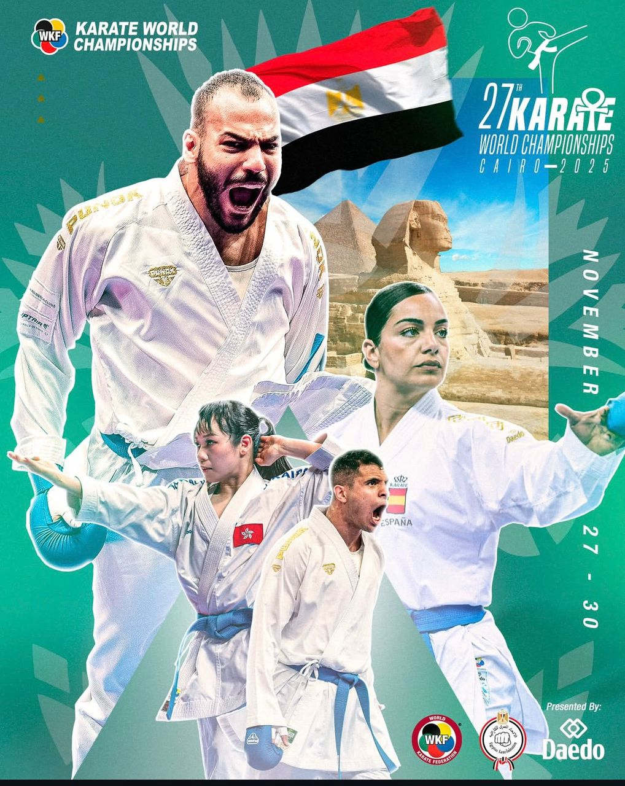

Championnat du monde 2026 - Le caire (EGYPTE)

Le championnat du monde de karaté 2025 se déroule au Caire en Égypte.
Cette compétition rassemble les meilleurs karatékas du monde dans les
catégories kata et kumite.
Le 27ᵉ Championnat du monde de karaté (WKF) s’est déroulé du 27 au 30 novembre 2025 au Caire,
en Égypte, au Cairo Stadium Indoor Halls Complex.
La compétition a réuni 378 athlètes venant d’environ 86 pays.
C’était une édition particulière car elle était organisée uniquement pour les épreuves individuelles (kata et kumite).
Championnats du Monde de Karaté 2025 - Médaillés d'Or
Le Caire, Égypte
Kata
| Catégorie | Athlète | Pays |
|---|---|---|
| Masculin | Ghinami | France |
| Féminin | Grace Lau | Hong Kong |
Kumite Masculin
| Catégorie | Athlète | Pays |
|---|---|---|
| –60 kg | Mehriddin Turakhanov | Ouzbékistan |
| –67 kg | Yugo Kozaki | Japon |
| –75 kg | Ken Nishimura | Japon |
| –84 kg | Youssef Badawy | Égypte |
| +84 kg | Matteo Avanzini | Italie |
Kumite Féminin
| Catégorie | Athlète | Pays |
|---|---|---|
| –50 kg | Gulshan Alimardanova | Ouzbékistan |
| –55 kg | Ahlam Youssef | Égypte |
| –61 kg | Alexandra Grande | Pérou |
| –68 kg | Elena Quirici | Suisse |
| +68 kg | Iryna Zaretska | Azerbaïdjan |
video de la competition
Voici quelques images
.jpeg)
.jpeg)
.jpeg)